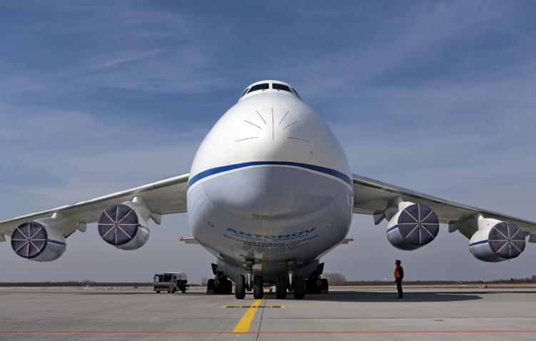

Ан-124

Ан-124 «Руслан» — советский тяжёлый дальний транспортный самолёт, разработанный в 1980-х
годах конструкторским бюро им. О. К. Антонова. Является одним из крупнейших в мире серийных грузовых самолётов
(уступая по размерам только Ан-225 «Мрия», который был создан на его основе).
Своё название «Руслан» получил в честь богатыря из русских былин. А его основным предназначением является
перевозка крупногабаритных и тяжёлых грузов на межконтинентальные расстояния.
Конструктивные особенности
- Многостоечное шасси с 24 колесами.
- Носовой и хвостовой грузовые люки.
- Встроенные бортовые краны и лебёдки.
- Система изменения клиренса (дорожного просвета).
Интересные факты
- В 1985 году «Руслан» установил 21 мировой рекорд, в том числе подняв груз массой 171 219 кг
на высоту 10 750 метров.
- Во время пандемии COVID-19 самолёты Ан-124 активно использовались для международной перевозки
медицинского оборудования и средств защиты.
- Ан-124 стал основой для создания единственного в мире сверхтяжёлого транспортного самолёта Ан-225 «Мрия»,
который был удлинён, получил два дополнительных двигателя и усиленную конструкцию для перевозки
космического челнока «Буран»
- Ан-124 «Руслан» — это легенда мировой транспортной авиации. Более 30 лет он остаётся рабочей лошадкой для
перевозки уникальных и сверхтяжёлых грузов, демонстрируя выдающиеся инженерные решения.